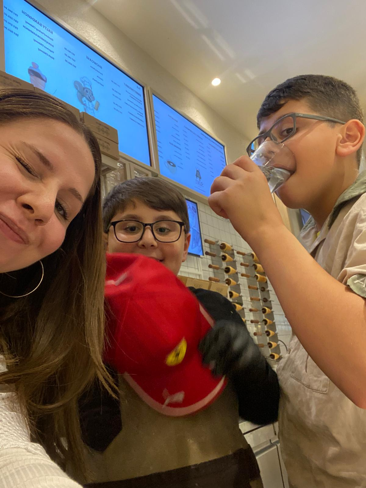
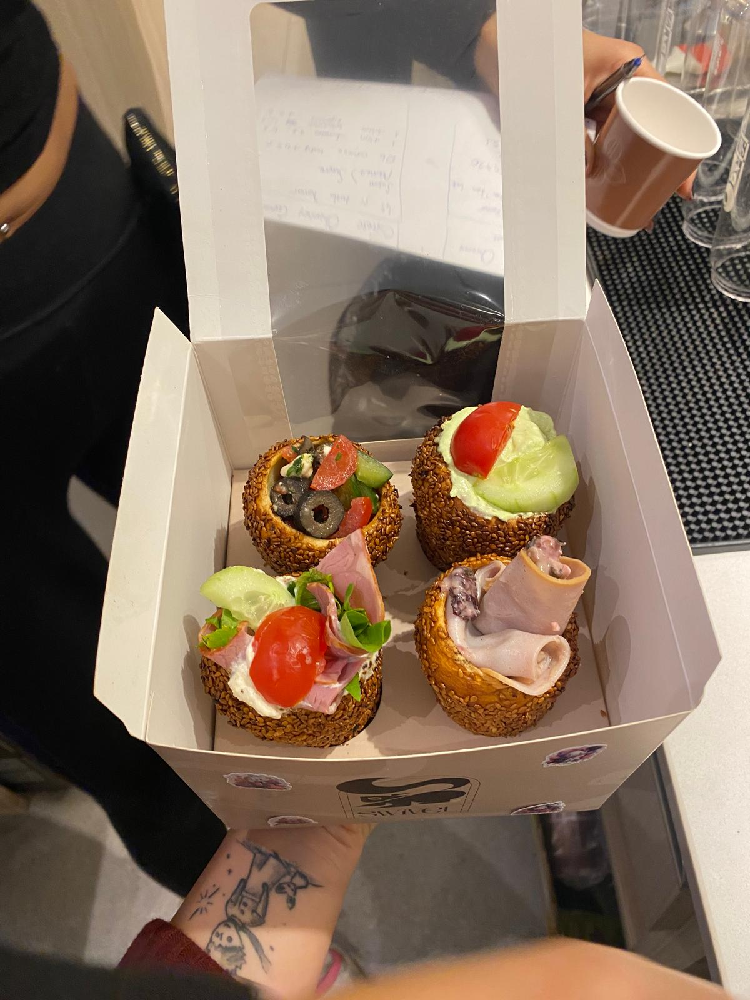
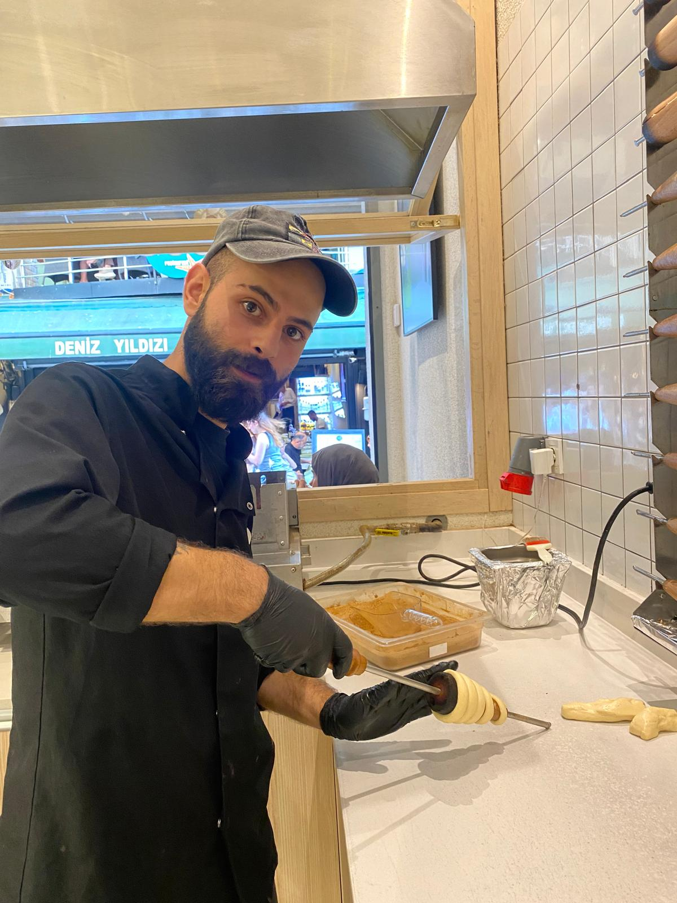

Ben Kimim?
Merhaba! Ben Elif. Işık Üniversitesi Bilgisayar Programcılığı 1. sınıf öğrencisiyim.
Okul dışında Kadıköy'de Swivel Cafe & Bakery'de çalışıyorum. Orada baristalık ve Macaristan'ın sokaklarında satılan bir tatlıyı yaptığım bir işe sahibim.
Okul ve iş sebebiyle çok boş zamanım kalmasa da bazı aktivitelerle ilgileniyorum. Sanatın her dalına ilgi duysam da hepsine yetişebilmek mümkün olmuyor, zaman buldukça edebiyat alanında eserler ve şiirler okuyorum. Aynı zamanda kendi çapımda bir şeyler çizmeyi seviyorum. Son dönemlerdeyse yeni aldığım ukulelem ile akorları basmayı öğreniyorum.


